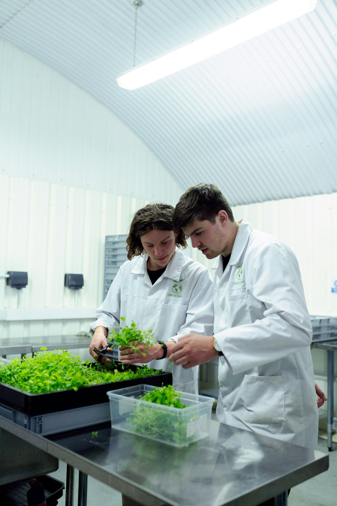
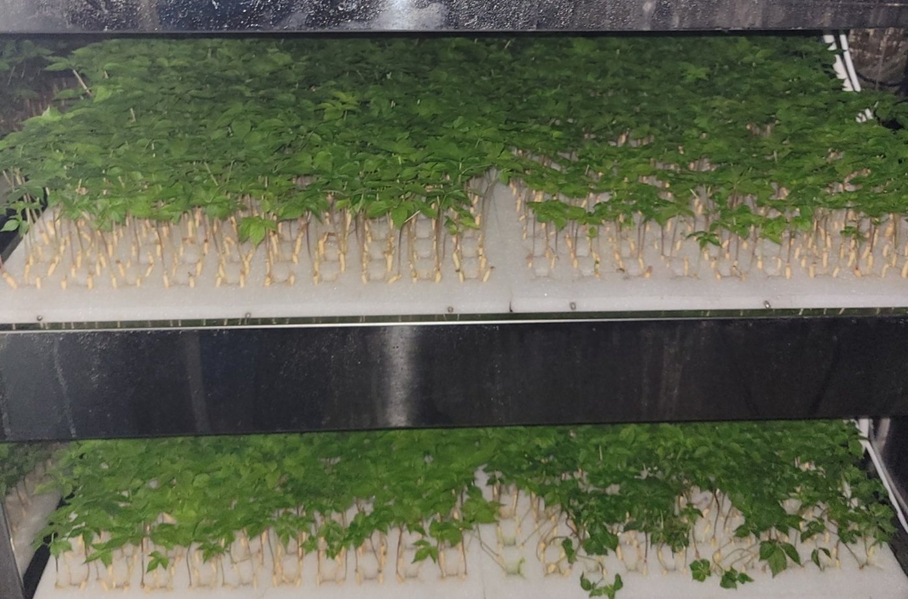
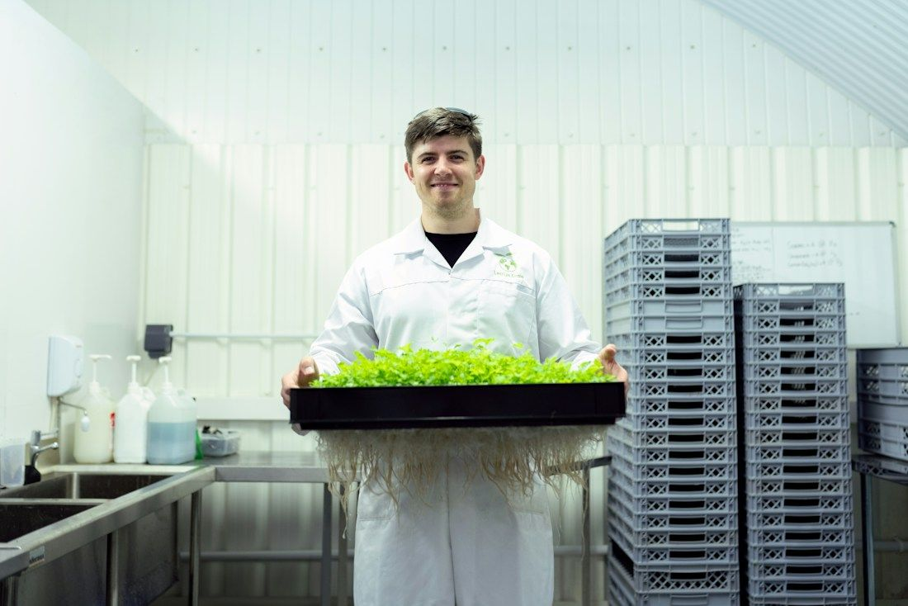
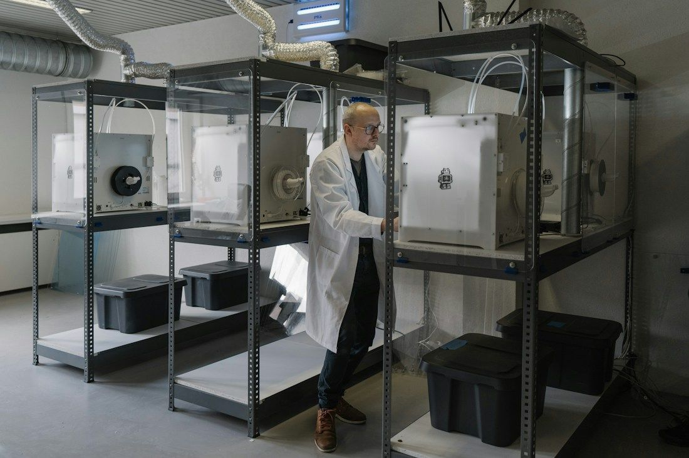
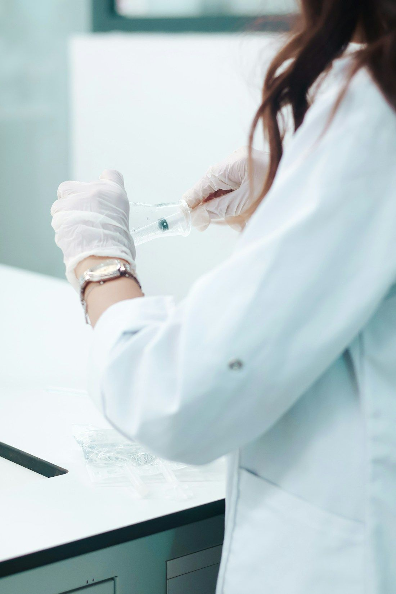
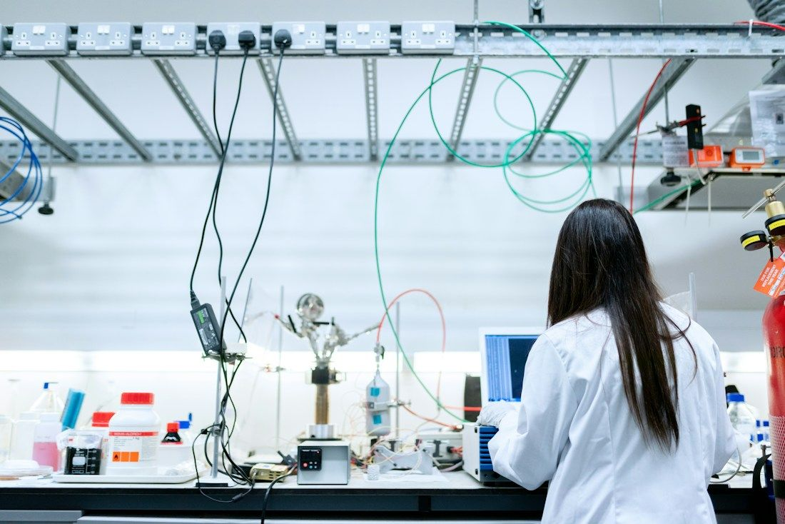

AI 생육단계별 환경제어
발아·초기 생육·비대 단계마다 온도·광량·광주기·양액 농도를 다르게 설정해, 진세노사이드가 잘 쌓이는 조건을 만듭니다.
특허 출원 10-2026-0124088AI Ginseng Research Farm · 전북 진안
인삼의 생육 단계마다 온도·빛·양액을 AI가 바꿔 주고, 흙 없이 공중에서 뿌리를 키웁니다. 진세노사이드 함량이 높은 인삼을 계절과 관계없이 생산합니다.

About
인삼은 같은 밭에서도 해마다 품질이 다릅니다. 흙과 날씨, 병해에 따라 자라는 속도도, 뿌리에 쌓이는 진세노사이드의 양도 달라지기 때문입니다.
AI팜테크는 소프트웨어·IoT·AI 기술로 이 편차를 줄이는 회사입니다. 재배 환경을 센서로 측정하고, 생육 단계에 맞춰 자동으로 제어하고, 결과를 성분 분석으로 확인합니다. 감이 아니라 기록으로 남는 인삼 농사를 만드는 것이 우리의 목표입니다.

EC·pH·온습도·광량을 센서로 실시간 수집합니다.
생육 단계에 맞는 환경을 AI가 자동으로 맞춥니다.
진세노사이드 함량을 분석해 품질을 수치로 확인합니다.
Inside the Lab
관찰하고, 조건을 바꾸고, 성분을 분석하고, 기록합니다. AI팜테크의 인삼 재배는 실험실의 방식으로 진행됩니다.

STEP 01 · OBSERVE트레이·포트 단위로 생육 상태를 관찰하고 기록합니다.

STEP 02 · CONTROL온도·습도·광·양액 조건을 생육 단계에 맞춰 설정합니다.

STEP 03 · PREPARE수확한 뿌리를 성분 분석용 시료로 준비합니다.

STEP 04 · ANALYZEHPLC로 진세노사이드 7종을 정량하고, 결과를 다음 재배 조건에 반영합니다.
Technology
흙 대신 공기 중에서 뿌리를 키우고, 생육 단계마다 환경을 바꿔 인삼이 가진 잠재력을 끌어냅니다.
발아·초기 생육·비대 단계마다 온도·광량·광주기·양액 농도를 다르게 설정해, 진세노사이드가 잘 쌓이는 조건을 만듭니다.
특허 출원 10-2026-0124088뿌리를 공중에 두고 양액을 미세하게 분무합니다. 흙을 쓰지 않아 연작장해와 토양 병해의 영향을 받지 않고, 전해수 살균으로 뿌리 환경을 깨끗하게 유지합니다.
무토양 · 전해수 살균포트 하나에 한 주씩 심고 가이드 배지판으로 뿌리 형태를 유도합니다. 600×600mm 트레이 36포트를 최대 5단까지 쌓아 좁은 공간에서도 균일하게 생산합니다.
자체 설계 · 시제품 가동 중HPLC 분석으로 진세노사이드 7종(Rg1·Re·Rf·Rb1·Rc·Rb2·Rd)을 정량해, 재배 조건과 성분 함량의 관계를 데이터로 쌓아 갑니다.
진세노사이드 7종 정량How it works
인삼은 자라는 시기마다 필요한 환경이 다릅니다. AI팜테크의 시스템은 단계가 바뀔 때마다 재배 조건을 자동으로 전환합니다.
휴면을 깬 묘삼이 싹을 틔우는 시기입니다. 온도와 습도를 안정적으로 유지해 고르게 싹이 트도록 합니다.
잎이 펼쳐지고 광합성이 시작되는 시기입니다. 광량과 광주기를 단계적으로 높여 튼튼한 지상부를 만듭니다.
뿌리가 굵어지며 성분이 쌓이는 시기입니다. 양액 농도와 환경 조건을 조절해 진세노사이드 축적을 유도합니다.
자체 설계 사양 기준이며, 실증 데이터에 따라 단계별로 조정됩니다.
Value
뿌리·잎·줄기까지, 진세노사이드가 높을수록 인삼의 쓰임은 넓어집니다. 같은 인삼 한 주를 키워도 노지 재배와는 다른 가치를 만듭니다.
PART 01 · BERRY
여름에 붉게 익는 인삼 열매입니다. 열매 추출물은 화장품과 음료·식품 원료로 쓰입니다.
PART 02 · LEAF & STEM
땅 위로 자라는 잎과 줄기에도 진세노사이드가 들어 있습니다. 차와 추출물, 화장품 소재로 쓰입니다.
PART 03 · MAIN ROOT
인삼의 몸통입니다. 수삼·홍삼으로 가공되어 건강기능식품과 식품 원료가 됩니다. AI팜테크는 진세노사이드 함량을 분석하며 키운 뿌리를 원료로 공급합니다.
PART 04 · FINE ROOT
주근에서 갈라져 나온 가는 뿌리입니다. 진세노사이드 농도가 높은 편이라 추출물과 홍삼 농축액 원료로 쓰입니다.
쓰이는 분야
같은 무게에 3~5배의 진세노사이드. 추출 수율이 높아지고 원료 단위당 가치가 올라갑니다.
원료 가치 3~5배환경 자극으로 특정 진세노사이드를 유도하고, 성분 분석서를 붙여 B2B로 납품합니다.
프리미엄 B2B 원료무농약으로 키운 인삼을 연중 출하합니다. 식품·즙·선물용으로 공급합니다.
연중 출하 · 무농약포트 단위로 키운 균일한 묘삼을 계절 없이 공급해 결주와 병해 손실을 줄입니다.
균일 규격 · 상시 공급재배틀·환경제어 SW·재배 레시피를 패키지로 공급합니다. 유휴 건물과 도심에서도 인삼 농장을 시작할 수 있습니다.
설비 + 레시피 패키지인삼을 연구하는 회사가 만든 반려견 홍삼 간식 브랜드입니다. 자체 브랜드로 소비자 직판(D2C)까지 넓힙니다.
자체 브랜드 D2C| 항목 | 노지 인삼 재배 | AI팜테크 스마트팜 |
|---|---|---|
| 진세노사이드 함량 | 연근·토양·기후에 따라 편차 | 3~5배 증대 (황산염 엘리시터 + 생육단계별 환경 자극)가치 ×3~5 |
| 수확까지 기간 | 6년 (6년근 기준) | 2년에 6년근 수준 성분자본 회전 ×3 |
| 수확 시기 | 연 1회, 가을 | 365일 연중 파종·수확상시 공급 |
| 땅 · 공간 | 한 번 재배한 밭은 10년 이상 재사용 어려움 | 무토양 · 연작장해 0 · 5단 적층으로 같은 바닥에 5배면적 ×5 |
| 병해 · 농약 | 뿌리썩음병·기상 재해에 노출, 농약 의존 | 전해수 살균으로 뿌리썩음병 96.5% 차단, 무농약손실 ↓ |
| 품질 증명 | 외형 등급 중심, 성분 편차 큼 | 포트 단위 균일 재배 + HPLC 진세노사이드 7종 정량 성적서단가 협상력 |
※ 진세노사이드 3~5배·2년 재배·뿌리썩음병 96.5% 차단은 자사 재배 설계 기준의 목표 성능이며, HPLC 정량 분석으로 실증을 진행 중입니다.
Business
스마트팜에서 키운 인삼을 공급하고, 검증한 재배 시스템을 농가에 보급합니다. 인삼을 아는 회사의 반려견 브랜드도 운영합니다.
진세노사이드 함량을 관리하며 키운 인삼을 식품·가공 기업과 소비자에게 공급합니다.
포트 단위로 세어 키운 균일한 규격의 묘삼을 계절과 관계없이 재배 농가에 공급합니다.
재배 프레임과 환경제어 시스템을 직접 운영하며 검증한 뒤, 인삼 재배를 시작하려는 농가와 기업에 공급합니다.
인삼을 연구하는 회사가 만든 반려견 홍삼 간식 브랜드입니다.
브랜드 보기Partners
부족한 재배 경험은 인삼 기업들과 함께 채웁니다.
R&D·원료·유통 분야의 협력 기업입니다.
FAQ
재배 방식, 성분 분석, 공급 품목, 도입 상담에 대해 자주 받는 질문을 정리했습니다.
AI팜테크는 전북특별자치도 진안군에 있는 인삼 스마트팜 기업입니다. 생육 단계별 AI 환경제어와 에어로포닉스(무토양 분무) 재배로 인삼을 키우는 시스템을 개발하고, 이 시스템에서 키운 인삼 원료와 규격 묘삼을 공급합니다. 반려견 홍삼 간식 브랜드 멍삼연구소도 운영합니다.
흙을 쓰지 않고 뿌리를 공중에 둔 채 양액을 미세하게 분무해 키우는 방식입니다. 흙이 없어 연작장해와 토양 병해의 영향을 받지 않고, 양액은 전해수로 살균해 뿌리 환경을 깨끗하게 유지합니다.
AI팜테크의 재배 시스템은 온도·습도·광량·광주기·CO₂·양액을 실내에서 제어해 계절과 관계없이 파종하고 수확하도록 설계했습니다. 재배 프레임은 600×600mm 트레이에 36포트를 두고 최대 5단까지 쌓도록 자체 설계했고, 시제품 재배기를 가동하며 실증하고 있습니다.
인삼의 생육을 발아·초기 생육·비대의 3단계로 나누고, 단계가 바뀔 때마다 재배 조건을 자동으로 전환하는 방식입니다. 발아기에는 온도·습도·분무 주기를, 초기 생육기에는 광량·광주기·CO₂를, 비대기에는 양액 농도(EC·pH)를 중점적으로 관리합니다. 특허 출원 번호는 10-2026-0124088입니다.
자체 설계 사양 기준으로 온도 18–26°C, 습도 60–80%, 광량(PPFD) 150–250µmol/m²/s, 광주기 하루 14–16시간, CO₂ 600–1,000ppm, 양액 EC 0.8–1.2dS/m, 양액 pH 5.8–6.2입니다. 실증 데이터에 따라 단계별로 조정합니다.
HPLC(고성능 액체 크로마토그래피) 분석으로 진세노사이드 7종(Rg1·Re·Rf·Rb1·Rc·Rb2·Rd)을 정량합니다. 분석 결과는 재배 조건과 성분 함량의 관계를 데이터로 쌓고 재배 조건을 조정하는 데 씁니다.
아닙니다. 노지 재배 대비 진세노사이드 함량 3~5배, 2년 재배로 6년근 수준의 성분, 뿌리썩음병 96.5% 차단은 자사 재배 설계 기준의 목표 성능입니다. 진세노사이드 함량은 HPLC 정량 분석으로, 재배 기간과 뿌리썩음병 차단은 재배 실증으로 확인하고 있습니다.
진세노사이드 함량을 관리하며 키운 인삼 원료를 식품·가공 기업과 소비자에게, 포트 단위로 키운 규격 묘삼을 재배 농가에 공급합니다. 재배 프레임·환경제어 소프트웨어·재배 레시피는 직접 운영하며 검증한 뒤 패키지로 묶어 농가·기업·지자체에 공급합니다.
ceotak@ai-farm-tech.com으로 품목, 필요 수량, 희망 공급 시기를 보내 주시면 공급 가능 여부와 견적을 안내해 드립니다.
ceotak@ai-farm-tech.com으로 재배 공간의 크기, 키우려는 품목, 희망 일정을 보내 주세요. 공동 연구와 투자·제휴 문의도 같은 주소로 받습니다.
한솔홍삼, 월랑, 이레쉼터, 비보라랩스, 인포보스와 R&D·원료·유통 분야에서 협력하고 있습니다.
멍삼연구소는 AI팜테크가 만든 반려견 홍삼 간식 브랜드입니다. 제품은 네이버 스마트스토어에서 판매할 예정이며, 원재료와 급여량은 스마트스토어 상품 페이지에 함께 적습니다.
인삼을 연구하는 AI팜테크가 반려견을 위해 만든 홍삼 간식 브랜드, 멍삼연구소. 제품은 네이버 스마트스토어에서 판매할 예정입니다.
Contact
인삼 원료·묘삼 납품, 공동 연구, 스마트팜 도입 상담 등 무엇이든 편하게 연락 주세요.